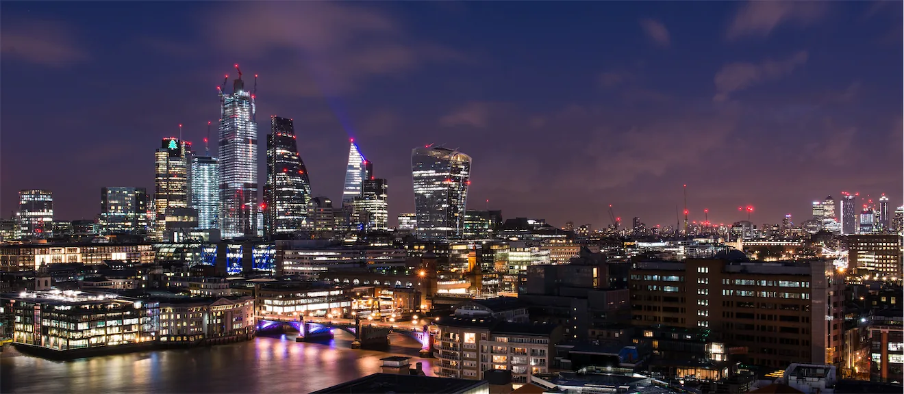
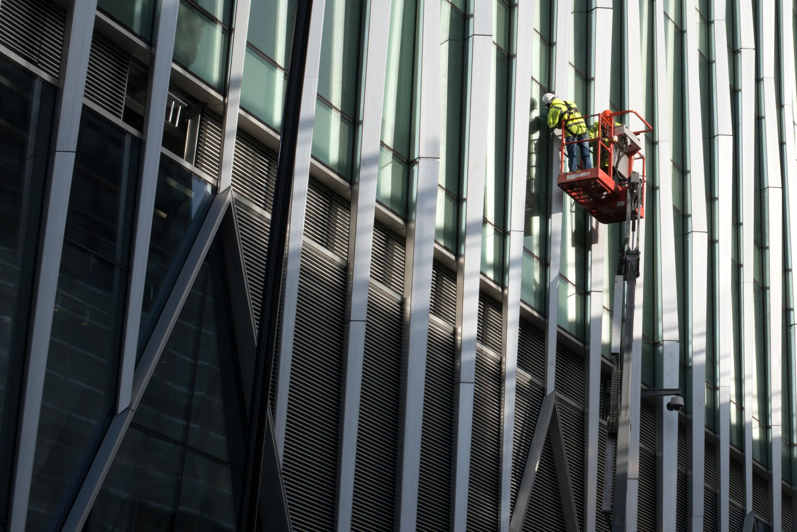
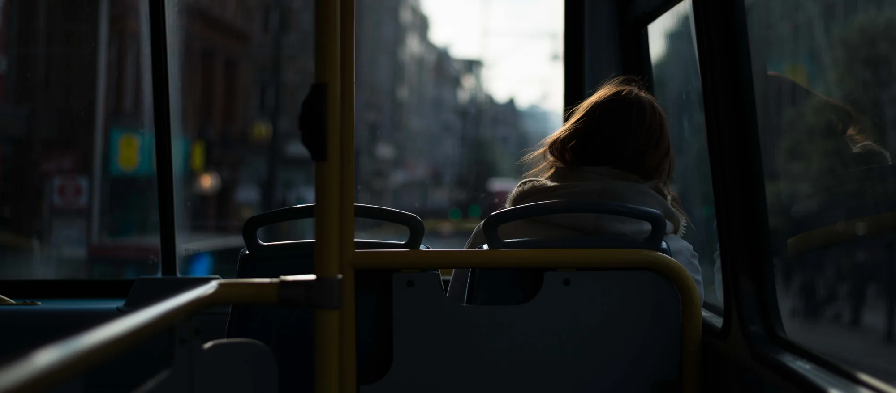
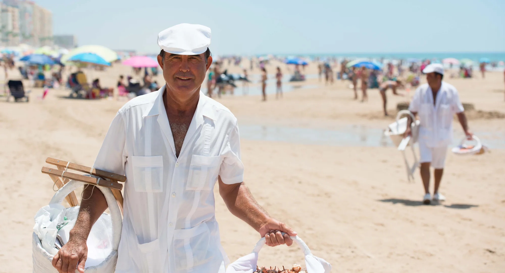

People & families
Relaxed portraits, couples and family sessions with movement, warmth and no forced smiles.

London based · Cádiz born
The essence
I photograph the unguarded gestures, changing light and small details that turn a day into a memory. The result is imagery that feels natural now and grows more meaningful with time.

London / ObservationLooking for the human scale in a restless city.
Stories liveSelected work
A living collection of street stories, celebrations and quiet connections across London and Cádiz.
Select any photograph for a closer look.

“I want an image to feel like a memory you had forgotten — familiar, alive and entirely your own.”

Where the eye beganCádiz, Spain
Behind the camera
I am a London-based photographer, born in Cádiz — two places that continue to shape how I see.
Cádiz gave me a feeling for open light, spontaneity and the theatre of everyday life. London taught me to notice layers: people moving at different rhythms, cultures meeting, and a story unfolding on every corner.
My approach is calm, curious and people-first. I offer enough direction to help you feel at ease, then leave space for the unexpected. That is often where the truest photographs are found.
Formally trainedNew York Institute of Photography
Ways to work together
Thoughtful photography for real people and purposeful businesses, in London, Cádiz and wherever your story takes us.
Relaxed portraits, couples and family sessions with movement, warmth and no forced smiles.
Atmosphere, connection and the fleeting details that bring the occasion back to life.
Human-centred visual stories for independent brands, makers, hospitality and publications.
A simple process
Share what you are planning, who it is for and how you want the photographs to feel.
We agree a natural plan, then keep the session relaxed enough for genuine moments to happen.
Your carefully edited photographs arrive in a private, beautifully presented online gallery.
Start a conversation
Tell me a little about it, or reach out directly by phone, WhatsApp or email. I will come back to you with availability and a thoughtful next step.